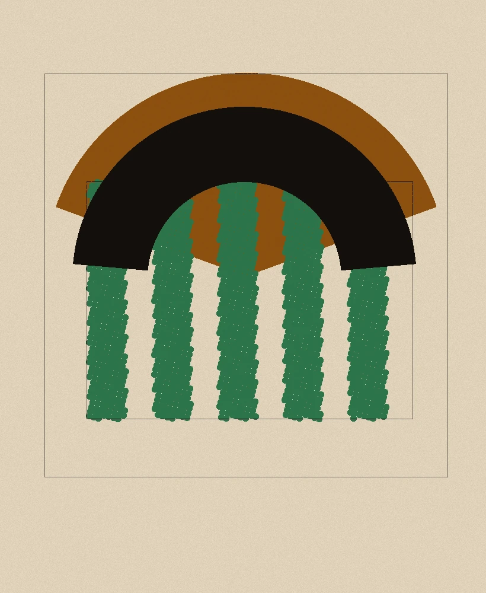
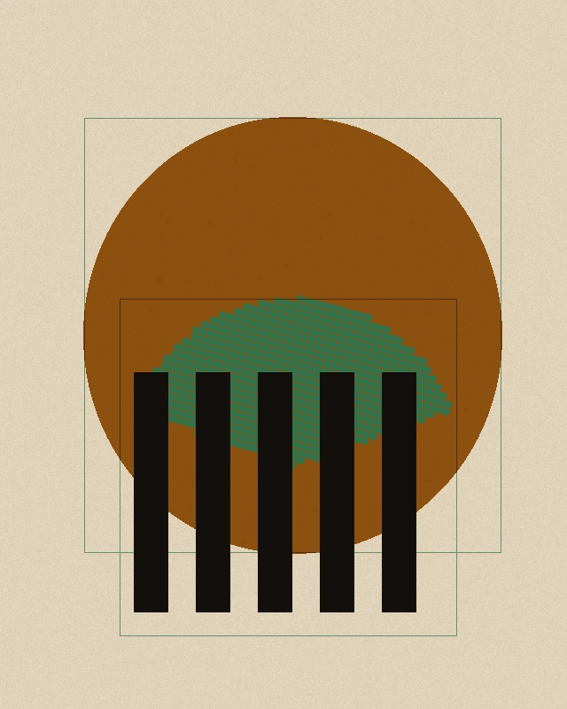
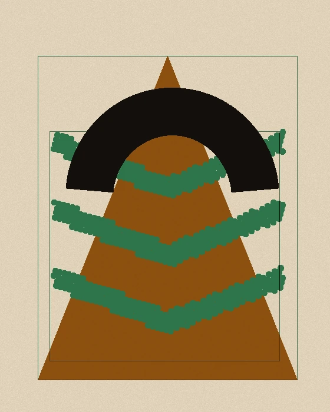
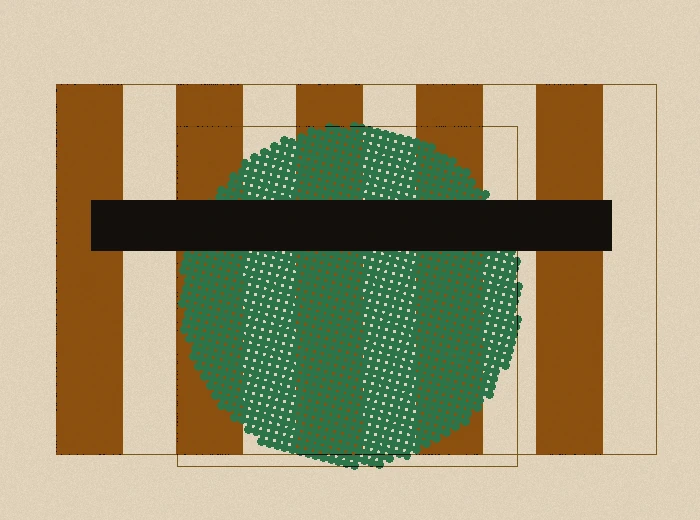
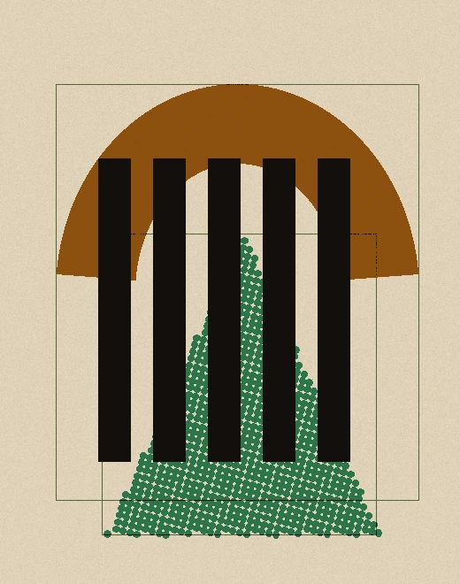
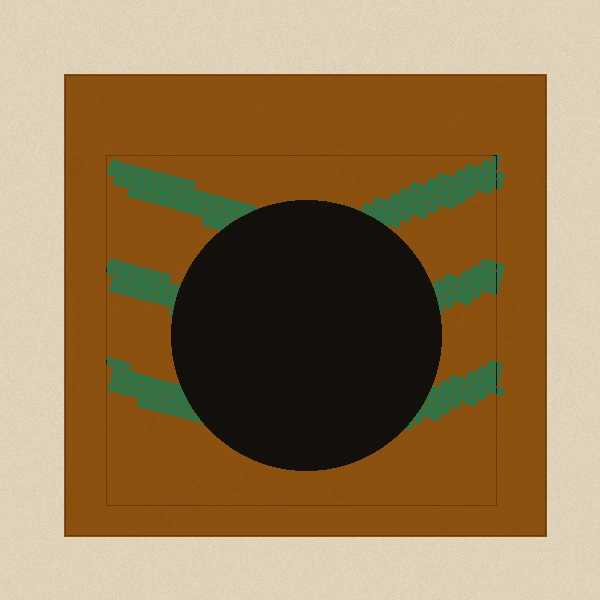
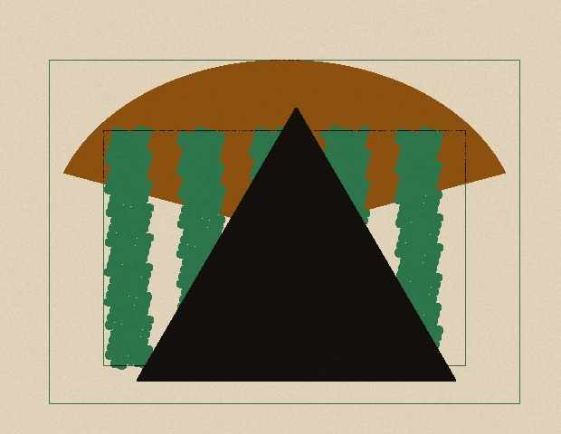
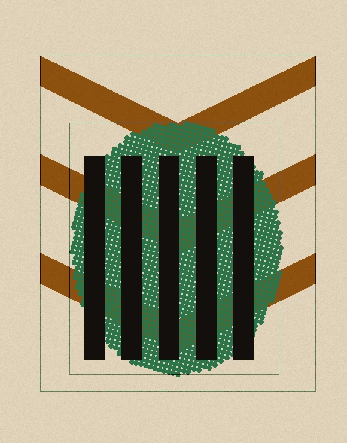
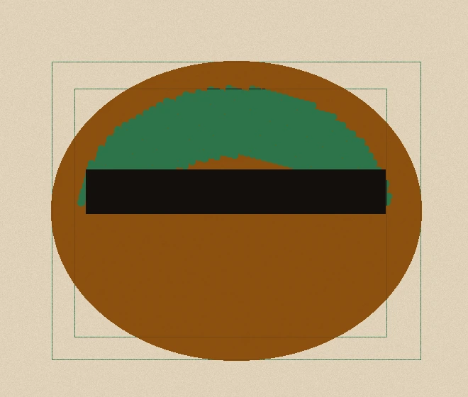

九张纸贴在这面墙上
底下埋着 12 列隐网格，纸块跨 2 到 6 栏不等，每块自己的套色偏移量与撕口方向都不一样。页面上没有一条对称边，读的顺序由纸块压边的高低给出。

OIT-1968-014
看这件作品

OIT-1967-003
看这件作品

OIT-1969-021
看这件作品
这一排的套色都往右下跑了 4 到 6px，是那天下午湿度上来的那批，纸受潮就套不准

OIT-1969-017
看这件作品

OIT-2025-011
看这件作品

OIT-2026-001
看这件作品
撕口是手撕的，纤维朝外支着；哪一块被压在下面，看右下角那个 3mm 的缺口就认得出来

OIT-1968-009
看这件作品

OIT-2026-005
看这件作品

OIT-2026-002
看这件作品
九张纸里有四张的绿版是上过网的（30 线），放大看得到网点；另外五张是实色块
正在贴：已贴上 0 / 9 张
这件装置今天在检修
明天上午十点回来，纸还是热的。检修期间线上档案照常可看，九张印版的偏移量一个都没改。
这面墙今天读不出来
二楼展厅湿度 78% 超标，纸块翘边。明天上午十点再来，或者先看线上那 14 个人的档案。
错误码 RH-78
九张印版的偏移表
偏移量不是随机的：全站只允许 3、4、5、6、7px 这五档，每一块纸属于哪一档都写在表里，可以拿尺子到墙上量。随机只允许出现在跨栏数与上下留白上。
| 档位 | 偏移量 | 用到的作品 | 色版 |
|---|---|---|---|
| 第一档 | 3px | 巡演海报第 7 版 · 不要票的二楼 | 橙版实色 |
| 第二档 | 4px | 日面与撕口 | 绿版上网 |
| 第三档 | 5px | 帕兰戈莱 · 纸边咬人 | 黑版压边 |
| 第四档 | 6px | 绿与橙的注册表 · 铜管乐的八个声部 | 纸色露出 |
| 第五档 | 7px | 雨林档案：30 线网 | 橙版实色 |
上面这条斜纹就是第二色版（绿版）在图例里的画法：全站固定 45°，只有这一个角度。
参展的 14 个人
- 玛丽亚·塞阿布拉
OIT-1968-014 - 若热·阿马拉尔
OIT-1967-003 - 莉吉娅·瓦斯康塞洛斯
OIT-1969-021 - 阿尔贝托·纳西门托
OIT-2026-002 - 克拉拉·蒙特内格罗
OIT-1968-009 - 塞尔吉奥·比当古
OIT-1969-017 - 伊内斯·卡瓦略
OIT-2026-005 - 迪奥戈·佩索阿
OIT-2025-011 - 娜拉·吉马良斯
OIT-2026-001 - 鲁伊·门德斯
OIT-2026-006 - 贝阿特丽斯·洛佩斯
OIT-2026-007 - 托马斯·阿基诺
OIT-2026-008 - 若阿金·弗雷塔斯
OIT-2026-009 - 露西亚·塔瓦雷斯
OIT-2026-010
周三晚上的铜管乐在二楼东侧，坐席不收票，七点整开始，八点结束。要提前看谱面，就在上面点开伊内斯那一件。